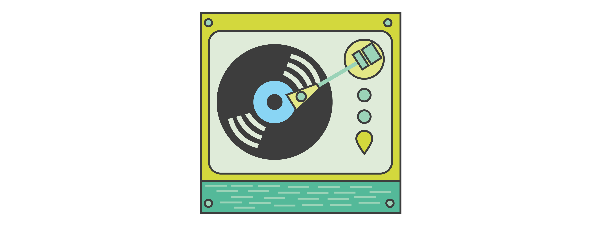

Blog
What I'm thinking about
My First Hackathon
This past weekend, rather than curling up on the couch or traveling somewhere awesome, I, along with a co-worker, Allen Sussman, joined around 300 other designers, engineers and entrepreneurs for a 24-hour travel-focused hackathon sponsored by Emirates Airlines. Within two days, we created an MVP (minimum viable product) for music enthusiasts to search for festivals and artists and books flights around the world.
Initial wireframe
Emirates challenged us to rethink the traveler experience in a creative way for a specific persona. Our assignment was to provide a unique take on flight search, focusing on the experience of travel rather than the logistics of booking. We were encouraged to think about the user’s specific needs and pain points when booking flights.
We thought about how we could make looking for flights a little more exciting by adding in an element of discovery. We brainstormed about the reasons that people travel--for vacations, to visit family or for business. But what if we focused on something more specific, such as a type of event that would encourage people to travel? Since Stubhub was one of the hackathon partners, we were able to get access to their API and could add in the ability to search for concerts. Voila! We set to work building Flightfest, our music enthusiast web app.
We discussed our idea with some of the Emirates representatives for validation, and they seemed to love the specificity (and feasibility) of the idea. With limited time, we set to work building a functional prototype. We focused on our persona, a millennial music enthusiast with disposable income, and how to enable him or her to search for artists and festivals.
Flightfest illustrations
These music enthusiasts travel all over the world for electronic festivals, so why not give them the ability to discover new artists and venues? We created the function to search for artists and then select a date range. From there, users can view the results on a map and then select a specific concert and flight to get there.
We used the StubHub API to grab information about concerts and Emirates’ mock API for flight pricing information (this API provides static information, which is why all flights are 2000 AED). In order to figure out an origin airport, we used latitude and longitude data from OpenFlights. We used MapBox to display the map with drop pins of all of the available upcoming concerts and festivals. Integrating with Kayak was essential for displaying flight options.The backend was written in Python with the Flask web framework. The front end uses Bootstrap and jQuery. We hosted the web app using Amazon Web Services. You can take a look at all of this code on github.